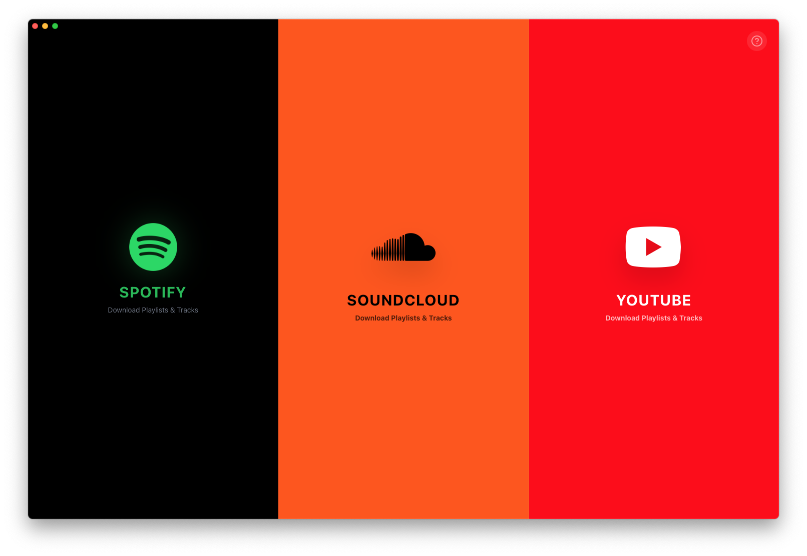

Turn your Spotify, SoundCloud and YouTube playlists into a local, high-quality music library. One click. No account walls. No nonsense.
Fetching latest version…
macOS 11+ · Free & Open Source · Auto-updates itself

Paste a Spotify, SoundCloud or YouTube link — tracks, albums or whole playlists. LiberAudio finds the best audio source and grabs it.
Parallel downloads, stream-copy audio (no slow re-encoding), and native Apple Silicon binaries. A 50-track playlist lands in minutes.
Every file gets proper title, artist and embedded cover art — your library looks perfect in Apple Music, iTunes or any player.
Multi-tier search with duration verification rejects covers, remixes and karaoke versions — you get the real song, not a 10-hour loop.
Download history plus folder sync: LiberAudio recognizes songs already on disk and never downloads anything twice.
The app updates itself, and its download engine (yt-dlp) auto-updates too — so it keeps working when platforms change things.
That's not damage — it's Apple's Gatekeeper. LiberAudio is free and open source, so we don't pay Apple's yearly notarization fee. macOS marks any app downloaded outside the App Store with a “quarantine” flag. Removing it takes 10 seconds — pick either way:
💡 The DMG also includes a “Fix LiberAudio.command” file — double-click it to run the fix automatically.
100% Free
MIT-licensed, open source
No tracking
No analytics, no accounts
Auto-updates
Always the newest version